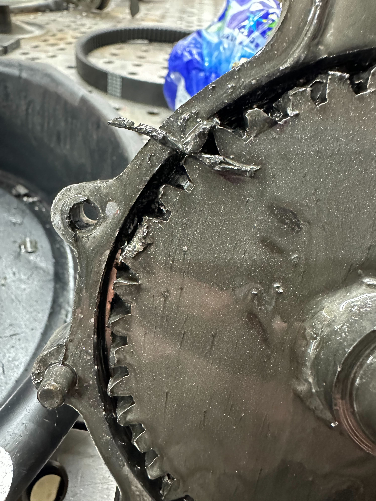
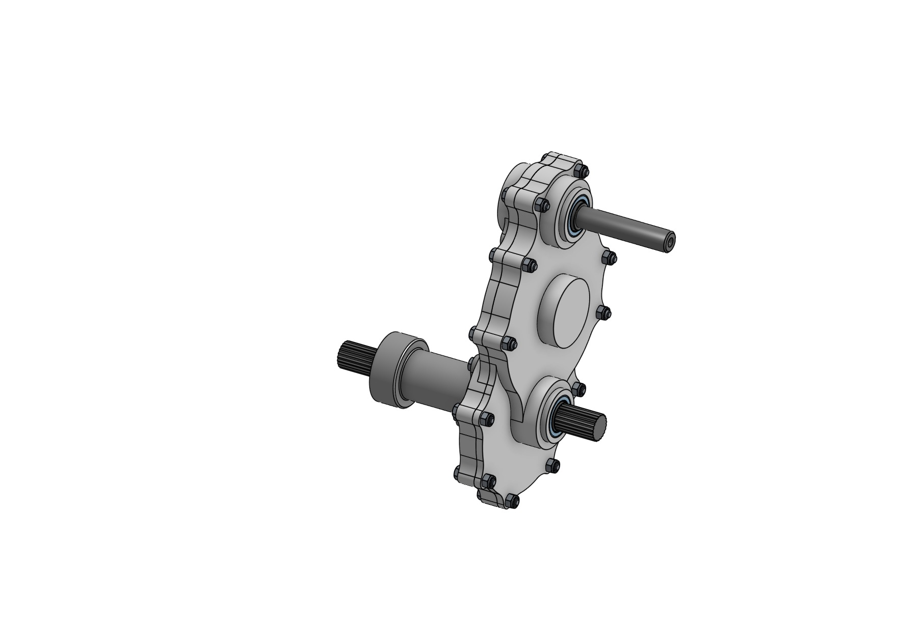
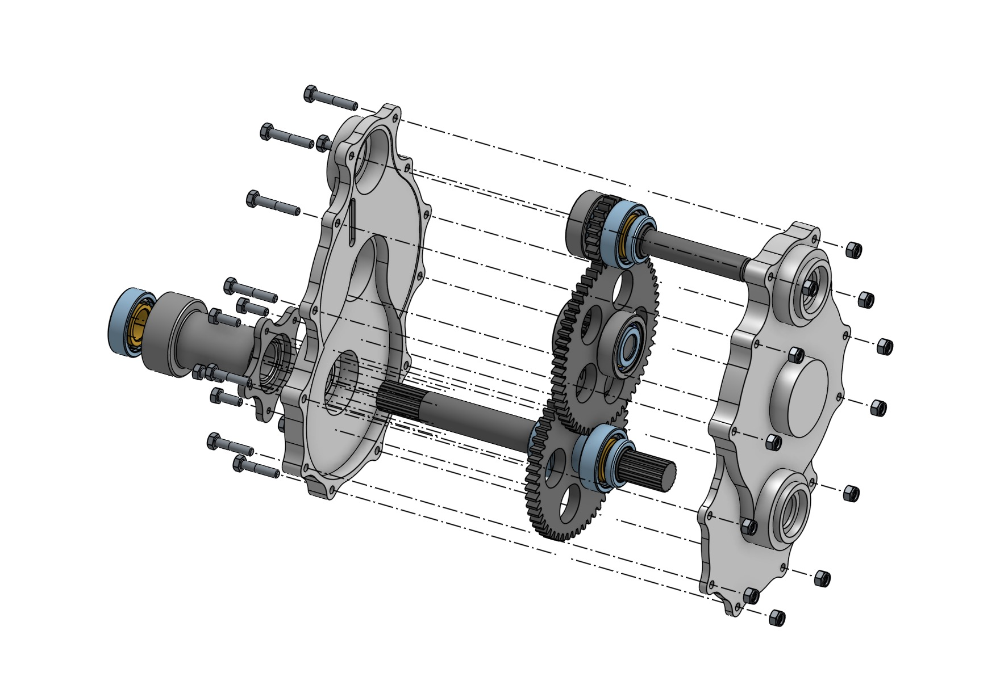
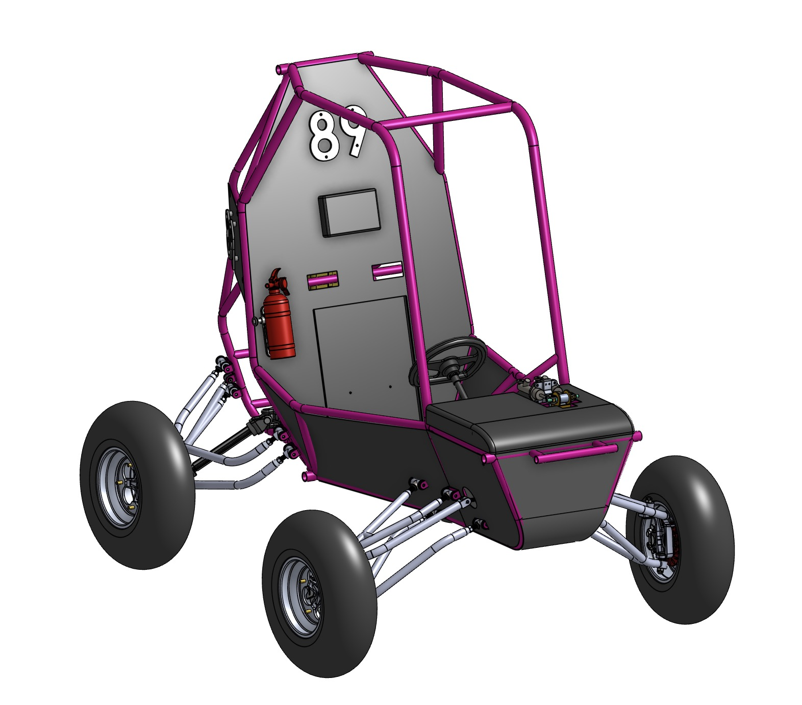
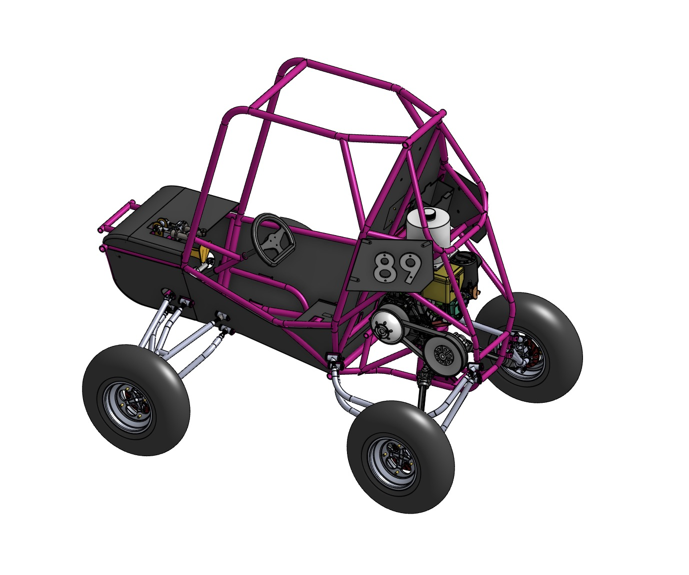

Two-Stage Reduction Gearbox Redesign
The Stevens Baja SAE gearbox failed catastrophically during testing — complete gear tooth fracture on the intermediate shaft because the design had a factor of safety of 0.4 and an incorrect center-to-center distance. I redesigned the gearbox from scratch: corrected the shaft geometry, upgraded the heat treatment from HRC 40 to HRC 50, lightweighted the large gears to cut rotational inertia by 47%, and replaced the chronically leaking RTV seal with a laser-cut Buna-N gasket. Results were validated through seven CVT configuration test sessions reaching a measured top speed of 22.4 mph.

Background
Baja SAE is a collegiate off-road racing competition organized by SAE International. Teams design and build a single-seat vehicle around a spec engine — a Kohler Courage 725 single-cylinder, 10 hp gasoline engine — and compete in events ranging from a straight acceleration run to a 4-hour endurance race over rough terrain. The Stevens car competes as car #89.
The powertrain layout is: engine → CVT → reduction gearbox → rear axle. The CVT (Comet 780 torque converter) acts as an automatic clutch and continuously variable ratio-selector; the reduction gearbox steps down the CVT output to a range suitable for the rear wheels. As Powertrain Lead, I was responsible for everything from the CVT input shaft to the axle output: design, analysis, manufacturing oversight, CVT tuning, and documentation.
The Failure
During initial drivetrain testing, the previous gearbox failed in the worst possible mode: complete gear tooth fracture on the intermediate shaft. Not progressive wear, not a bearing — the teeth cracked through at the root and separated from the gear body. This is a fast-fracture failure, meaning the material was loaded past its ultimate strength, not merely yielded. Two root causes were identified.
The first was incorrect center-to-center distance between the shaft bores in the housing. Gear geometry is defined around a specific operating center distance; if that distance is wrong, the gears don't mesh on their theoretical pitch circles. A center distance that is too small forces the gears into interference, dramatically increasing tooth contact stress. One that is too large creates excessive backlash and intermittent contact, causing impact loads each time a new tooth pair comes into mesh. Either condition accelerates failure and neither was caught before the original gearbox was machined.
The second was insufficient heat treatment. The previous gears were 4140 chromoly steel heat treated to only HRC 40 — the Lewis equation analysis confirmed a factor of safety of approximately 0.4 under worst-case static loading. That means the gears were designed to less than half the strength required to carry the expected load.


Drivetrain & Load Analysis
The full torque path from engine to axle sets the loads that every gearbox component must withstand. At maximum CVT reduction (3.38:1), the Comet 780 multiplies engine torque by 3.38× before it even enters the gearbox. The two-stage gearbox then applies a further 8.68:1 reduction, giving a theoretical axle torque of over 540 ft·lb from a 10 hp engine.
The gearbox provides two stages of spur gear reduction. Stage 1 is a 3.0:1 reduction (19T driving 57T); Stage 2 is a 2.895:1 reduction (19T driving 55T). Total gearbox reduction is 8.68:1, and with the CVT at its highest-torque ratio the complete drivetrain reduces by approximately 29.3:1.
The critical gear for bending stress is the Stage 2 input pinion. Because it sits on the intermediate shaft — which already carries the 3:1 Stage 1 torque multiplication — its input torque is 9× the engine output, making it the highest-loaded tooth mesh in the system. The Lewis analysis was run on this pinion as the worst case.
Gear Design & Lewis Equation Analysis
The Lewis equation models a gear tooth as a cantilever beam loaded at its tip — a conservative, well-established approach for gear tooth bending stress:
σ = (Wt × P) / (F × Y)
σ = bending stress at tooth root (psi) | Wt = tangential load (lb) | P = diametral pitch (teeth/in) | F = face width (in) | Y = Lewis form factor (tooth count & pressure angle)
All gears use diametral pitch 10, a face width of 0.375 in, and a 20° full-depth involute profile. Y = 0.314 for 19 teeth at 20° (standard Lewis table). The Stage 2 pinion tangential force is the product of engine torque, CVT ratio, and Stage 1 gear ratio, divided by the pinion pitch radius:
rpinion = T1 / (2P) = 19 / (2 × 10) = 0.95 in
Wt = 2,251 / 0.95 = 2,369.6 lb
σ = (Wt × P) / (F × Y) = (2,369.6 × 10) / (0.375 × 0.314)
σ = 23,696 / 0.11775 = 201,236 psi
Allowable bending stress — 4140 HRC 50: 174,045 psi
FoS = 174,045 / 201,236 = 0.865
A Lewis FoS below 1.0 doesn't automatically mean failure. The equation is intentionally conservative: it assumes the full load applies to a single tooth tip, ignores load-sharing between adjacent teeth, and uses a simplified beam model for root geometry. Real gear teeth distribute load more favorably, and finite element analysis was used to refine the stress picture beyond the Lewis estimate. The gearbox survived the full testing season without tooth distress, consistent with these built-in analytical margins.
The more important story is comparative. Both old and new designs carry the same loads on the same geometry. The only variable is the allowable bending stress of the material, which is set by heat treatment hardness:
| Parameter | Old Design (Failed) | New Design |
|---|---|---|
| Gear material | 4140 Chromoly Steel | 4140 Chromoly Steel |
| Heat treatment | HRC 40 | HRC 50 |
| Allowable bending stress | ~80,500 psi | 174,045 psi (+116%) |
| Shaft center distance | Incorrect — non-standard mesh | Corrected to design value |
| Large gear mass | Solid (full disc) | Lightweighted — 47% inertia reduction |
| Lewis FoS (Stage 2 pinion) | ~0.40 ← failed | 0.865 — 2.16× improvement |
| Oil seal | RTV silicone bead (leaked) | Laser-cut Buna-N gasket |
| Result | Catastrophic tooth fracture | Passed full testing season |
Moving from HRC 40 to HRC 50 on 4140 steel — a 10-point Rockwell C increase — more than doubled the allowable bending stress. This is one of the highest-leverage improvements available in gear design: same alloy, same geometry, same tooling. Only the heat treatment cycle changes, and the payoff is a 2× improvement in the critical failure metric.

CAD Model
The gearbox was fully modeled in CAD before machining. The assembly model shows all three shafts — input (top right), intermediate (left, with splined CVT-side stub), and output (bottom right, with splined axle stub) — and the two bearing locations on each shaft. An exploded view was used during design review to verify the assembly sequence and confirm that all twelve bolts, both housing halves, and all gear-shaft subassemblies could be installed in the correct order without conflict.


Full Vehicle CAD Assembly
Beyond the gearbox itself, I assembled the full vehicle CAD model for the team. Each subgroup — frame, suspension, steering, brakes, powertrain — designed their components independently. Integrating these into a single coherent assembly was necessary to verify that everything fit within the chassis envelope, that no components interfered with each other, and that clearances were adequate for assembly and serviceability. This included checking that the gearbox mounting tabs aligned with the frame, that the axle length was correct relative to the suspension geometry, and that the CVT guard had adequate clearance to the belt and frame tubes under full suspension travel.



Fixing the Oil Leak
Every previous gearbox on the Stevens Baja car had leaked oil. The sealing method was RTV (room-temperature vulcanizing) silicone applied as a bead around the mating housing faces before bolting the halves together.
RTV has well-known failure modes in this application. Applied as a bead, compression varies continuously around the perimeter — thicker where the applicator moved slowly, thinner elsewhere. The silicone degrades with repeated thermal cycling. And there is no reproducible way to apply it: every assembly produces a slightly different joint.
The redesigned gearbox uses a Buna-N (nitrile rubber) gasket laser-cut to the exact profile of the housing mating face, with all twelve bolt holes positioned from the same CAD file that defined the housing. Nitrile rubber is the industry standard for oil seals — chemically resistant to petroleum lubricants, elastically stable across temperature range. Laser cutting ensures a uniform, repeatable thickness at every bolt position. The compression is defined by material specification and housing flatness, not by application technique. The gasket is also replaceable: the CAD file produces an identical part on demand.

Material Selection
| Housing | 6061-T6 Aluminum, anodized — The housing carries bearing loads and maintains shaft alignment but is not part of the gear mesh. Aluminum's strength is adequate for these secondary loads while keeping the assembly light and machinable on a knee mill. The housing was anodized in the team's signature magenta color — Type II anodizing builds a hard aluminum oxide layer for corrosion and abrasion resistance. |
| Gears | 4140 Chromoly Steel, HRC 50 heat treated, finish-ground — 4140 is the standard alloy for highly loaded gears: deep hardenability, excellent toughness at high hardness, and good pre-heat-treat machinability. The upgrade from HRC 40 to HRC 50 more than doubled the allowable bending stress and substantially improved pitting resistance (surface fatigue life). Parts were roughed before heat treatment and finish-ground after to restore tooth geometry. |
| Large gear design | Lightweighted — pocketed disc geometry — Material was removed from the large gear faces in a pattern that maintains tooth root strength while reducing the gear's rotational inertia. The result is a 47% reduction in inertia for the large gears compared to the solid-disc previous design. Lower rotational inertia improves CVT shift response and reduces the energy stored in the drivetrain during impacts. |
| Bearings | Deep groove ball bearings at each shaft location (six total), sized for combined radial and thrust loads. The Stage 2 output shaft bearing is the most heavily loaded given the high tangential force at that mesh and the cantilevered axle geometry. |
| Gasket | Laser-cut Buna-N (nitrile rubber) — Oil-resistant, thermally stable, repeatable thickness. Replaced RTV silicone to eliminate the chronic leak problem. See Oil Seal section above. |
Prototyping
Before any metal was machined, I 3D-printed the housing in PLA. The prototype allowed dummy bearings and the actual shafts to be pressed in, verifying that gear spacing, bearing pocket diameters, and the bolt pattern were correct. It also let us work out the assembly sequence — getting two shafts and four gears into the housing simultaneously requires a specific order of operations that isn't obvious from the CAD alone.
The prototype caught two issues. First, one bearing pocket was undersized and had to be enlarged in CAD. Second, a bolt in the flange pattern interfered with a shaft during assembly and had to be relocated. Both were trivial fixes before machining, and would have been expensive to correct in aluminum.
Machining & Manufacturing
The 6061-T6 housing was machined on a Haas knee mill. Key operations: squaring and facing both halves flat to gasket specification, boring all six bearing pockets to final diameter using a boring head for concentricity, drilling and tapping the twelve-bolt flange pattern, and cleaning up the internal pocket geometry. Shaft work was done on a CNC lathe — the intermediate shaft required tight tolerance at the bearing journals and gear seat locations, since any runout here directly affects gear alignment across both stages.
The gears were hobbed in the soft (pre-heat-treat) condition, then sent out for heat treatment to HRC 50. After heat treatment, the tooth flanks were finish-ground to restore accurate tooth profile and correct surface finish. The gears were then pressed and keyed onto their shafts.


CVT Tuning & Testing
The Comet 780 CVT's shifting behavior is set by two tunable parameters: the primary flyweight mass (which controls the engine RPM at which the belt begins to shift upward) and the secondary spring rate (which controls the back-torque required to upshift and the belt tension during steady-state running). Getting these wrong means the engine either bogs under load (too-early upshift) or screams past peak power without shifting (too-late). Seven configuration test sessions were run over a 40-ft course, measuring vehicle speed for each spring/flyweight combination.
| Test | Primary (flyweights) | Secondary (spring) | Position | Avg Speed |
|---|---|---|---|---|
| 1st | Stock balls | Yellow springs | 1 tick, spot 2 | ~16.3 mph |
| 2nd ★ | Stock balls | Red springs | 1 tick, spot 2 | ~21.3 mph avg / 22.4 mph peak |
| 3rd | Blue/gold rollers | Green springs | 1 tick, spot 2 | ~12.5 mph |
| 4th | Blue/gold rollers | Green springs | Clean old sheaves | ~12.2 mph |
| 5th | Blue/gold rollers | Green springs | 1 tick, spot 1 | ~12.7 mph |
| 6th | Blue/green rollers | Red springs | 1 tick, spot 1 | ~16.3 mph |
| 7th | Blue/green rollers | Red springs | 1 tick, spot 1 | ~16.9 mph |
The stiffer red secondary spring (higher back-torque to upshift) paired with the stock primary flyweights at spot 2 produced the best performance — 22.4 mph over 40 ft, versus ~12.5 mph for the softest green spring configuration. The explanation is that the red spring maintains higher belt clamping force during acceleration, preventing belt slip and keeping the CVT in a lower ratio longer so the engine can operate near peak torque output. Tests 3–5 with blue/gold rollers consistently underperformed, suggesting those flyweight masses cause the CVT to upshift before the engine reaches peak power RPM.
Testing also tracked shifting behavior on video and logged engine RPM at top speed to correlate predicted vs. measured shift points against the Comet 780 engagement chart.
Results
The redesigned gearbox was assembled with the laser-cut Buna-N gasket, filled with gear oil, and installed in car #89. It ran through a full campus testing season — including the acceleration testing and dynamic driving that represent the worst-case loading conditions outside of competition — without any sign of tooth distress or gear wear. Post-test inspection confirmed zero oil leaks, a first for the Stevens Baja car's recent history. The gearbox was subsequently disassembled for inspection, and tooth surfaces showed normal contact patterns with no abnormal wear or pitting.
Car #89 is entered in the Baja SAE competition June 10–14, 2026. The complete analysis — Lewis equation calculation, material selection rationale, CVT tuning data, and center distance derivation — has been documented in the team's design package for future powertrain leads.

Key Specifications
| Gearbox type | Two-stage spur gear reduction |
| Stage 1 | 3.00:1 — 19T pinion → 57T gear |
| Stage 2 | 2.895:1 — 19T pinion → 55T gear |
| Total gearbox reduction | 8.68:1 |
| CVT | Comet 780 — max torque ratio 3.38:1 |
| Total drivetrain reduction | ~29.3:1 (CVT × gearbox) |
| Engine peak torque | 18.5 ft·lb — Kohler Courage 725 |
| Stage 2 pinion Wt (static) | 2,369.6 lb |
| Lewis bending stress | 201,236 psi (Stage 2 pinion) |
| Diametral pitch | 10 |
| Pressure angle | 20° full-depth involute |
| Face width | 0.375 in |
| Gear material | 4140 Chromoly Steel |
| Gear hardness (old → new) | HRC 40 → HRC 50 |
| Allowable bending stress (new) | 174,045 psi |
| Lewis FoS — old (HRC 40) | ~0.40 |
| Lewis FoS — new (HRC 50) | 0.865 (+2.16×) |
| Gear inertia reduction | 47% (lightweighted large gears) |
| Housing material | 6061-T6 Aluminum, anodized magenta |
| Oil seal | Laser-cut Buna-N gasket |
| Best measured speed (CVT testing) | 22.4 mph over 40 ft (red springs, stock flyweights) |
| Status | Installed and tested — Baja SAE competition June 2026 |